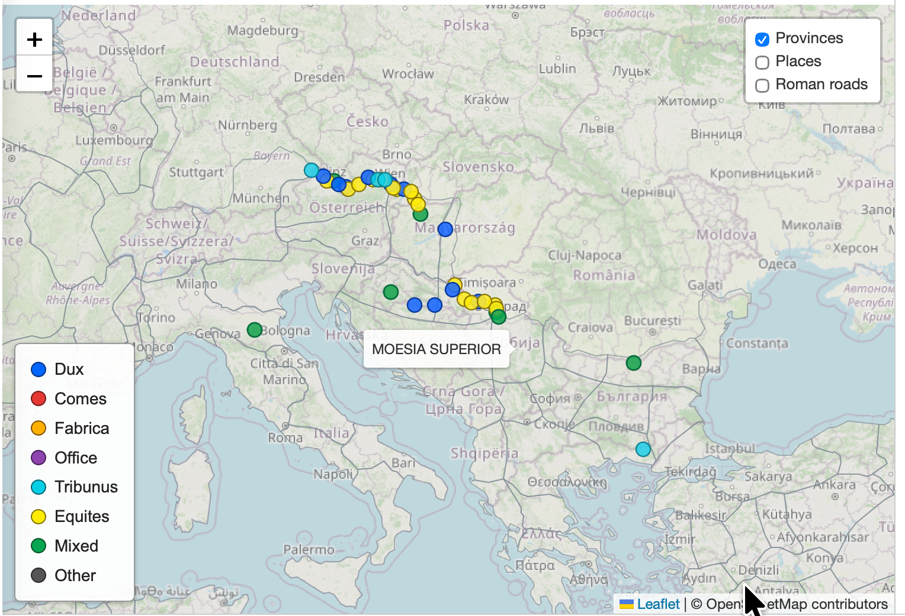
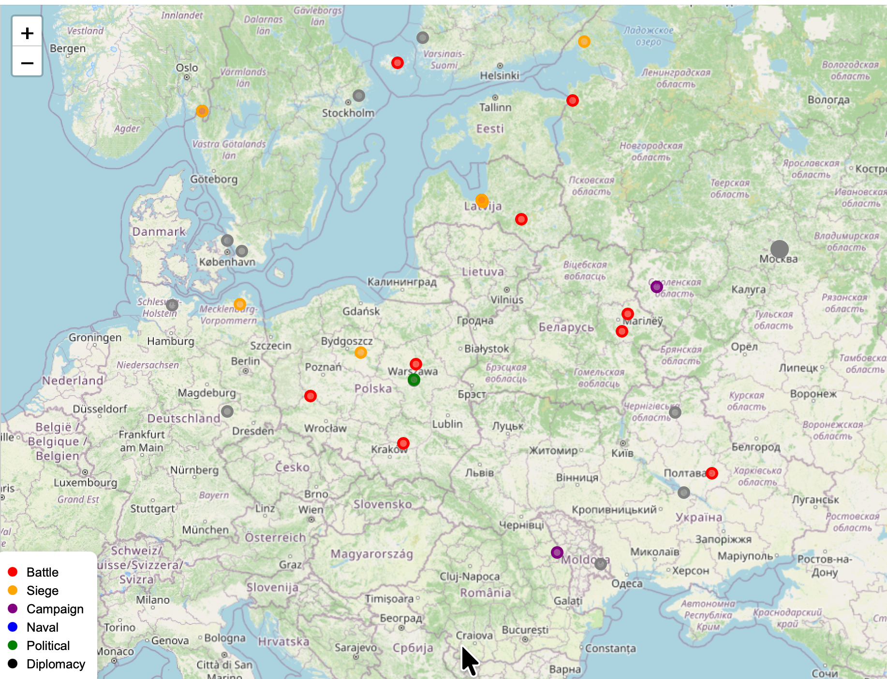

From source to research instrument.
Three experiments in AI-assisted humanities research—Living Notitia, MilHist and Homer—show how sources, data and working tools can develop through successive questions rather than a predetermined software design.
Read what the document actually says.
The Notitia Dignitatum names offices, military units and stations. It does not provide a ready-made database or a modern map. The first task is to preserve its wording and recognize its internal structure.
The excerpt at right is from the western section, chapter XXXII, Dux Pannoniae. It is a selected extract, not the complete chapter.
Sub dispositione viri spectabilis ducis provinciae Pannoniae secundae ripariensis et Saviae:
Turn observations into relationships.
The text suggests an office, a group of subordinate units and named stations. We can represent those relationships without treating the inferred geographic coordinates as part of the original source.
Each proposed identification can then be checked against external geographic evidence. Uncertainty remains visible rather than being hidden inside the map.
See what the structured evidence reveals.
When many entries are connected to geographic locations, a map can expose distributions, concentrations and apparent gaps. These observations may prompt a return to the original document and further revision of the data.

How to read the map: Dux locations are shown in dark blue. Other subordinate military units are colour-coded as indicated in the map legend.
Build relationships, not a database server.
MilHist grew from researching individual historical conflicts. The information was organised in CSV files, without SQL or a conventional database management system.
Conflicts, events, phases, types, dates, places and historical persons became explicitly connected. A person could appear in several events and across different wars. The same structure could therefore be reused when a new conflict was added.
- Identify the conflict: parties, historical context and time period.
- Identify the main events: organise them into phases and event types.
- Assign locations and dates to each event.
- Describe each event briefly, including its outcome.
- Write a brief historical context for each event.
- Identify the principal historical persons who participated directly.
- Track participants’ military histories and appearances in other wars.
- Add Wikipedia links for each person and event.

Reuse makes the work faster.
Once the method was familiar, approximately 20 documented events from the Crimean War could be added in about one hour. The acceleration came from applying an established structure rather than redesigning the data model for each conflict.
The one-hour example is an observation from our work, not a general performance benchmark. Historical identifications and external references still require verification.
Revisiting an early digital humanities project.
The Homer experiment began with a question from Martin Mueller in an online discussion group for classical scholars. He asked whether the Chicago Homer, developed about twenty-five years earlier, was still being used. We understood the question chiefly as one about the continued usefulness of the original technical implementation, perhaps also suggesting an interest in modernisation.
Our first action was simple. We selected a digital edition of the Iliad and the Odyssey and built a basic interface for searching the original Greek. A practical limitation determined its design: we had no Greek keyboard. Instead of typing Greek words, users could click on a word or select a phrase and retrieve all the verses in which it occurred. The first working version was completed within the project's first hour.
Adding translations
The next step was to make the text multilingual. To avoid copyright complications, we selected older translations, including Erland Lagerlöf's Swedish translation and an English translation. The Swedish text was available in OCR form and could be used directly, except that minor line-break errors caused some verses to misalign with the Greek. A small AI-generated Python program corrected the line structure and restored alignment by book and verse.
There was no need to redesign the application. A specific obstacle in the data had led to a small, purpose-built correction. The project had grown from a basic Greek text search into a simple multilingual research tool.
Present status
I am not a classical philologist and do not yet know which linguistic problems are most important to students and scholars working with Homeric Greek. The prototype has reached a natural point for external evaluation. I have been in contact with Martin Mueller, now Professor Emeritus at Northwestern University, and am awaiting his reaction.
For now, the result is a functioning prototype, not a completed philological study. It demonstrates how a practical question can become a useful tool through dialogue, while specialist judgement remains essential in deciding what should come next.
What stays constant as the tools change?
Source fidelity
Distinguish what a source states from modern classifications, proposed identifications and interpretations.
Incremental development
Build the simplest useful representation, test it, and change it when the evidence demands.
Researcher judgment
AI can help analyze, structure and implement. Historical conclusions still require critical assessment and verification.
The process is iterative: source → structure → visualization → new questions → source. The instrument grows with the investigation, rather than determining its outcome in advance.
This page documents a working approach through three examples. It does not claim that every interpretation or identification has been settled.
← Back to the three experiments